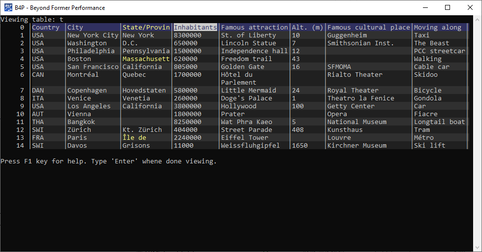

Introduction
The B4P functions table list() and view() are suitable to view table contents interactively.
| Command | Description |
|---|---|
| table list ( my table ) | List the table. See table list() for details where you can specify additional parameterse to specify the starting and ending rows and columns and also use the 'briefly' option to list the first and last n lines only. The table will be shown on the console without need of user interaction and is also useful as a program statement to print out table contents. |
| view ( my table ) | Shows the table interactively on the console using Interactive Visualization. |
| view ( my table, browser ) | Display the table using the default browser selection |
| view ( my table, excel ) | View the table on Excel. If styles are applied, then the table will be shown with those styles. |
| view ( my table, csv ) | View the table, saved as CSV file, on Excel. |
| view ( my table, html ) | View the table, saved as HTML file, on Excel. If styles are applied, then the table will be shown with those styles. |
| view ( my table, xml ) | View the table, saved as XML (Excel 2003 XML legacy format), on Excel. If styles are applied, then the table will be shown with those styles. |
| view ( my table, datatables ) | Opens the files with a browser and making use of data tables, a function provided by SpryMedia Ltd. under the MIT license. |
| view reset | Delete all temporary files created if viewed in browsers or with Excel |
Example Output with view( my table )

>> table load( t, 'examples\Cities.csv')
Loaded CSV/TSV file 'examples\Cities.csv':
15 rows, max 8 columns, 8 columns in 1st row, 120 fields, list separator: ;
>> =[t:..5,0]
{'Country','City','State/Province','Inhabitants','Famous attraction','Alt. (m)'} [parameter set]
>> =[t:City,3..5]
{'Philadelphia','Boston','San Francisco'} [parameter set]
>> =[t:City,Boston,{Inhabitants,Famous attraction}]
{620000,'Freedom trail'} [parameter set]
>> table process selected rows ( t, [Country]==USA, echo( row(),": ", [Famous attraction] ) )
1: St. of Liberty
2: Lincoln Statue
3: Independence hall
4: Freedom trail
5: Golden Gate
9: Hollywood
>>Advanced Ways to View Tables
Make use of the execute B4P statements interactively and execute B4P expressions interactively to inspect selected table contents. See the example below showing various statements and expressions entered: